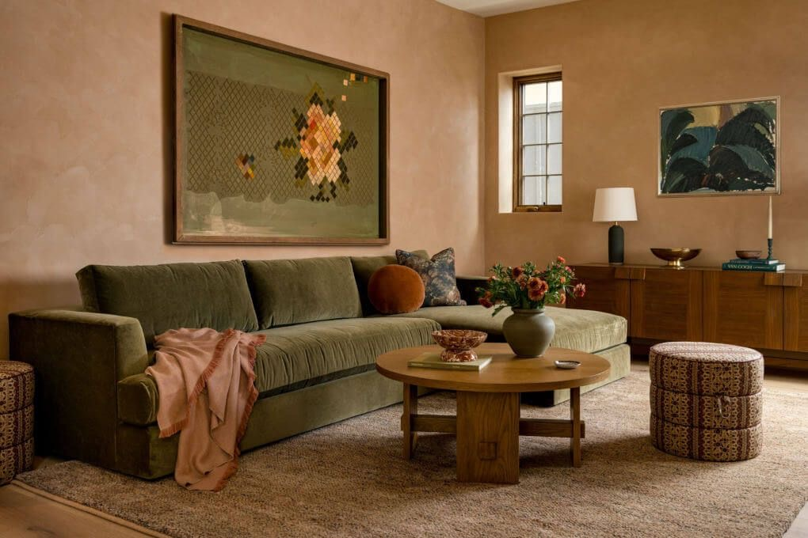

Bem-vindo(a)
Caro leitor, decorar uma casa é mais do que escolher os móveis, cores da sua parede ou um lustre e jogos de cozinha. A junção de elementos de decoração contempla um ambiente acolhedor e esteticamente bonito. Descubra ideias simples de decoração que transformarão seu cotidiano.
Home Edit inspira projetos de decoração, compartilha tutoriais DIY e apresenta tendências de design de interiores.
